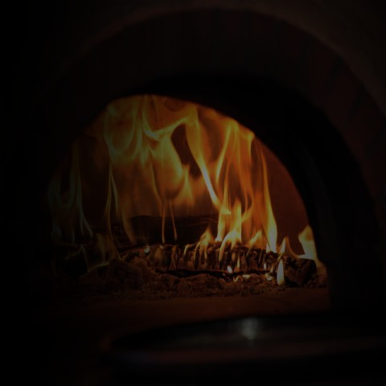
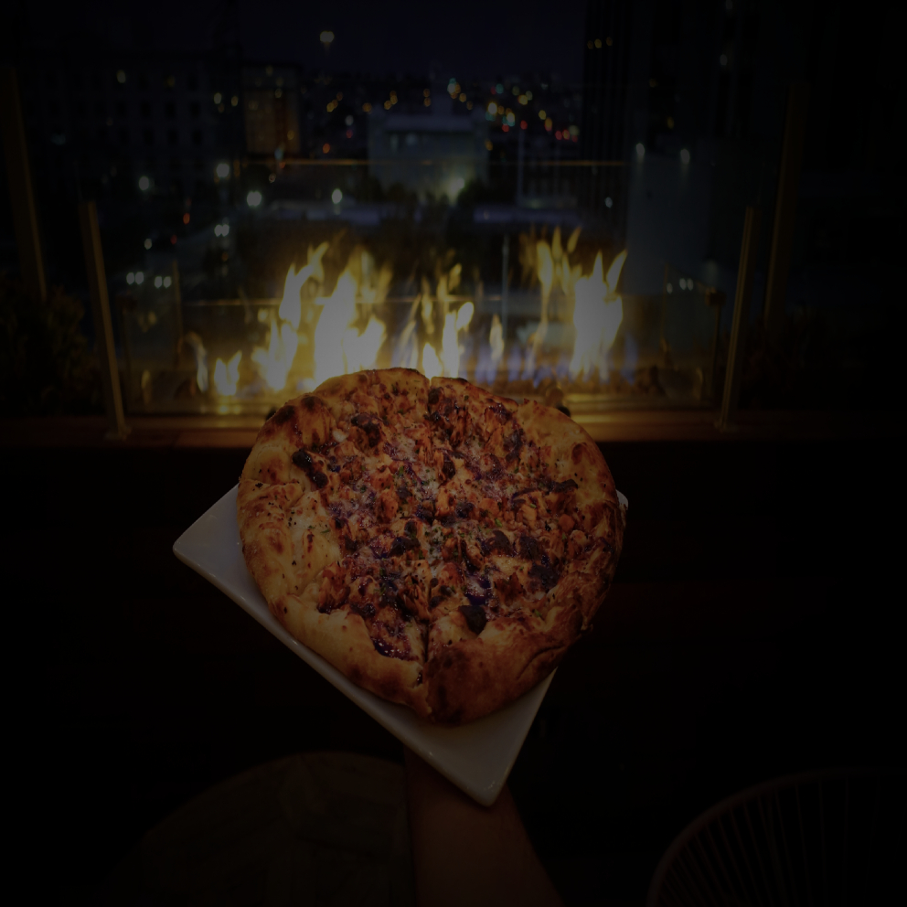
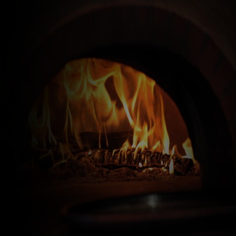
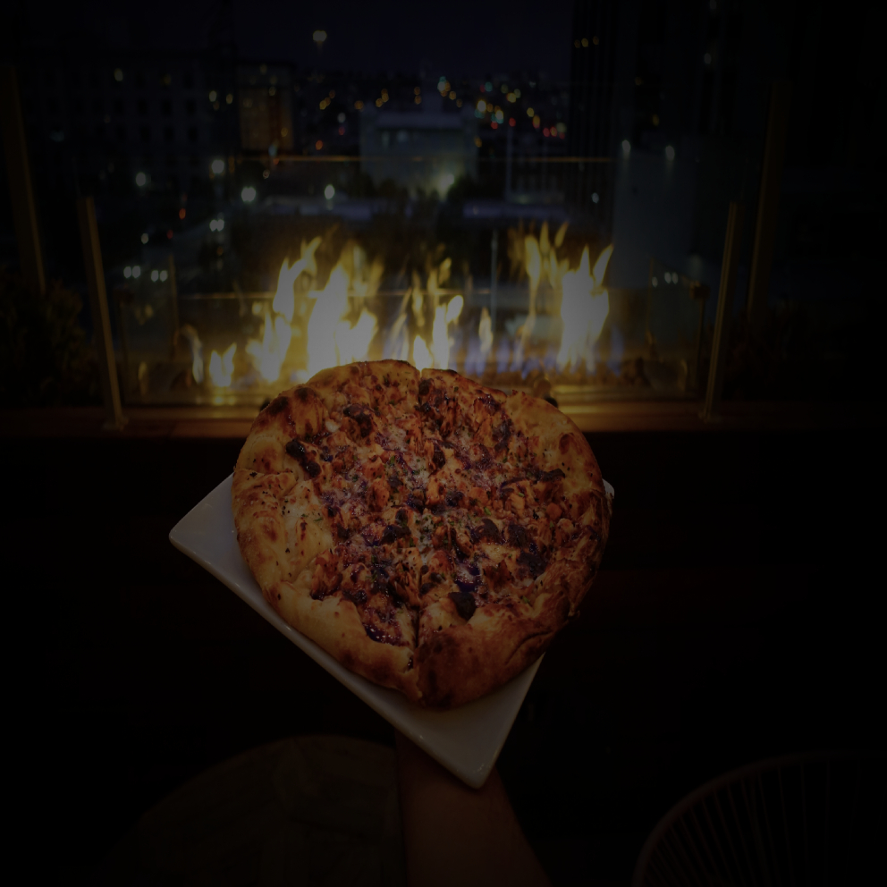

¿Por qué debería elegirnos?
En Pizzería pizza pizza creemos que las pizzas no son solo una comida más; sino que son pasión, amor y dedicación.
Debido a este pensamiento, nuestros expertos chefs son evaluados constantemente para certificar que el compromiso de calidad se demuestre en cada una de las preparaciones.
Debido a este pensamiento, nuestros expertos chefs son evaluados constantemente para certificar que el compromiso de calidad se demuestre en cada una de las preparaciones.
Fuego alto, calidad alta
“Somos lo que hacemos día a día; de modo que la excelencia no es un acto, sino un hábito” - Aristóteles
Tenemos como objetivo el representar las palabras de Aristóteles, y es por eso que nuestros productos buscan que la excelencia sea la base de nuestras reseñas.
Tenemos como objetivo el representar las palabras de Aristóteles, y es por eso que nuestros productos buscan que la excelencia sea la base de nuestras reseñas.
Disfrute de las vistas
En Pizzería pizza pizza pensamos en usted y es por esto que en el acuerdo con La Universidad determinamos nuestra ubicación en la terraza de Independencia 1.
De esta forma usted podrá disfrutar de las vistas con la comodidad de esta Gran Universidad mientras goza de nuestra distinción absoluta.
De esta forma usted podrá disfrutar de las vistas con la comodidad de esta Gran Universidad mientras goza de nuestra distinción absoluta.